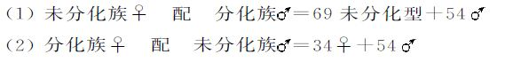
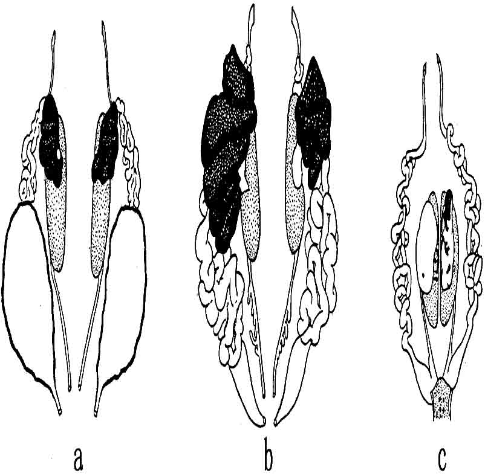

蛙类的性别与性转化
自从Pflüger1881—1882年的工作以后，大家都知道幼龄蛙的性率特别，并且在从蝌蚪到蛙的变态时期内，生殖腺往往表现中间状态。这一类的个体究竟是雌是雄，引起了很多争论。近年来证明了：这种中间类型往往变成雄性，甚至有人主张许多族的雄性都经过这一阶段。
Richard Hertwig的实验证明，推迟蛙卵的受精时间，便会大大增加雄性的比例，并且在极端情况下，甚至所有的个体都变成了雄性。把推迟受精时间同染色体的改变联系起来的企图，还没有成功。
进一步的研究证明了，由于没有认清异族的蛙在精巢和卵巢的发育上表现出了显著的差别，于是以前研究的结果便模糊起来了。Witschi指明欧洲山蛤（Rana temporaria）一般分为两类或两族。一类的精巢和卵巢直接由早期生殖腺分化出来。这一族住在山岳地带和遥远的地方。另一族生活在山谷和中欧，其成雄个体的生殖腺经过一个中间阶段，腺内有他认为是未成熟卵子的大细胞。以后另有一组新的生殖细胞取而代之，并且变化成真正的精子。这些族称为未分化族。
Swingle也找到两类或两族的美国产喧蛙，大概说来，其中一种的精巢和卵巢很早便从原生殖腺分化出来。另一些族则分化较晚。在第二类雌蛙里，原生殖腺内的大细胞以后都发育成为真正的卵子，但是雄蛙的原生殖腺，在雌蛙分化以后，还继续存在一些时候。后者的大细胞可以分化为精子。不过这些精子后来大半被吸收，而一些尚未分化的细胞却变成了真正的精子。Swingle把雄性蛙原生殖腺内的大细胞不当为卵子，而看成是雄性的精母细胞。他证明这些细胞，经过一次流产的成熟分裂以后，便大部分被破坏了。换句话说，雄蛙并不经过雌蛙阶段，不过好像是在它进行第二次成熟分裂以后、分化之前，作出了一次形成精子的不成功的尝试罢了。
无论对原生殖腺内的大细胞作什么解释，目前讨论中的要点是，外在条件中或内在条件是否可以这样地影响预定雌蛙的原生殖腺，以致它后来产生有作用的精细胞。Witschi的证据支持在中性族内有过这样的转化。
Witschi汇集了德国和瑞士各地观察者所报道的性率，如下表。表的右边一行表示雌性所占的比例。由此可见前两群（第一、第二两群）性别比率接近1∶1，后三群（第三、第四、第五三群）的雌性百分率较高，有的区域最高达到一对雌雄所生的全部个体可以完全是雌性（100%）。它们都属于中性族。
Witschi所发现的最重要的事件涉及分化族与未分化族两者性率差异的遗传。Hertwig用异族的雌性和雄性进行杂交。

杂交（1）的子代雌性，全是未分化型；杂交（2）的子代雌性，则分化很早。Witschi断言分化族的卵子，比较未分化族的卵子，有着更强的决定雌性的作用。


在另一个实验里，Hertwig用“决定雌性能力”（Kraft）、强弱不同的各个未分化族进行杂交。他的结论是：弱卵子同强精子受精的结果，与强卵子同弱精子受精的结果，是一致的。“同一类型的卵子或成雄精子，具有相同的遗传组合”。
蛙类的染色体成分问题已经争论了好几年了，不仅涉及究竟有多少条染色体，而且也涉及有二型配子的，究竟是雄性还是雌性。几个物种的染色体最可能的数目似乎是26条（n＝13）。也有过其他数目（24、25、28）的报导，按照Witschi最近的记载：山蛤有26条染色体，包括雄性的一对大小不同的X、Y在内（图145）。如果这点得到证实，那么，雌性为XX（同型配子），而雄性为XY（异型配子）。

图145 山蛤（Rana temporaria）的染色体群。a.二倍型雄性染色体群；
b和b′.第一次精母细胞分裂的后期，各有13条染色体；c和c′.同前；d.第一次精母细胞X和Y在第二次精母细胞分裂中的分离（仿Witschi）
Pflüger（1882）、Richard Hertwig（1905）和以后的Kuschakewitsch（1910）已经证明过熟的卵子提高雄性的百分率。不过因为这些实验不是用同一个雄性和同一组卵子受精来进行的，所以实验结果也就可疑了。Hertwig本人指出了低温效果同过熟效果很相类似。许多胚胎是畸形的。Witschi证实了Hertwig的结果（用Irschenhausen族）。估计过熟到80~110h之久的卵子，发育成为74 ，21♀和20条中性蝌蚪（注：蝌蚪死亡率为20%，幼蛙死亡率为35%。）。
，21♀和20条中性蝌蚪（注：蝌蚪死亡率为20%，幼蛙死亡率为35%。）。
Richard Hertwig比较正常卵子和延迟卵子（相隔67h）两者的性率，结果如下：由正常受精而来的49日龄幼虫（在变态之前），有46个中性♀；由延迟受精卵而来的幼虫则有38个中性♀和39
。在大约150日龄的正常蛙当中，有些是分化型的雌性，有些在生殖腺方面是中性的雌性，有些是雄性（数目不详）；从延迟受精的卵子当中，则得出45个中性♀和313个
。一岁的蛙有6♀和1
（正常受精）以及1♀和7
（延迟受精）。这里，过熟作用似乎可以促进雄性的分化，其次，则使中性个体（这里列入未分化雌性一类）转化为雄性。
卵子过熟的结果，究竟应怎样解释，还是很不明白的。表面上，这些结果似乎表明正常应该形成雌性的，可以变成雄性。这种雄蛙的精子，其性别决定的性质究竟怎样，一直还没有进行过遗传学检验。理论上，这些精子应该是同型配子。但在自然条件下，这样的个体似乎是很难生存和发挥作用的，否则过熟一定不会稀少，何以实际上没有看到正常的雄性产生100%的雌性呢？Witschi已经指出过过熟卵分裂异常，而且他所检查过的少数胚胎表现了内部的缺陷，不过这些缺陷同雌性向雄性转化之间，有什么关系，却不明了。
Witschi的实验（1914—1915）已经证明：生殖腺（或原生殖腺）尚未分化，或者雌雄同体的生殖腺尚未成熟时，这样的个体是有可能被外在因素转化成雌性的。
Ursprungtal族的蝌蚪很有可能属于未分化族。这族的蝌蚪在10℃时，有23个雄性和44个雌性；在15℃时，有131个雄性和140个雌性；在21℃时，有115个雄性和104个雌性。显然，这一族蝌蚪的性别不受温度的影响。
另一方面，Irschenhausen族的蝌蚪在20℃下饲养时，有241个未分化型雌性；在10℃下饲养的六批里，有25个雄性和438个雌性。Witschi由此得出结论：低温是一种雄性决定因子，不过不应当忽视，有许多这种所谓的雌性后来发育成了雄蛙。他以后谈到这些实验时说道：“低温使雄性变成了雌性早熟的幼龄雌雄同体，这一般也是未分化族的正常现象”。
因此，这里除了真正的雄性状态延缓以外，是否尚有别的因素，似乎还有问题。
目前只可能根据现有的证据，作出一个暂时的结论：未分化族的半数个体正常应该变成雌性，看来，它们的生殖细胞可以变成精细胞，也可以被来自另一来源并且以后变成精子的细胞所代替。换句话说，通常足够产生雄性或者雌性的那种基因间的平衡，也可以被环境因子“取消”，一个染色体平衡应该产生雌性的个体可以发生精巢。换句话说，这意味着每一只蛙能够发生精巢和卵巢；在正常情况下，XX个体只发生卵巢，而XY个体只发生精巢；但在非常条件下，XX型的雌蛙可以发生精巢。相反方向的变化是否可能，还没有证实。
有过许多关于“雌雄同体”成蛙的记载（图146）。Crew列举了40个新近的例子。这些雌雄同体的蛙是否同上面所谈到的性转化有某种关系，还不知道。也许重要的是，在上述实验中也报道了几个雌雄同体的个体。另一方面，有些雌雄同体的个体也可能有不同的起源。但是它们的附属性器不对称的很少，生殖腺组织往往不整齐地分布，所以要说它们是性染色体排除后所造成的雌雄体或嵌合体，也找不出很多证据来。其次，支持雌雄同体型的精子和卵子都是同型配子的证据如果有效，那么，把染色体的排除作为一个可能的解释，也就失去了它的根据。

图146 三只雌雄同体型的蛙（示泌尿生殖系）（仿Crew和Witschi）
Witschi从一个雌雄同体（Hh）的个体里，成功地取出了成熟的精子和卵子，并用另一个分化族的精子和卵子来进行检验，结果如下：
（1）分化族雌性的卵子 配 雌雄同体型的精子＝♀♀
（2）雌雄同体型的卵子 配 分化族雄性的精子＝50%♀+50%
雌雄同体型的卵子又和同一个体的精子受精，得到45♀和一个雌雄同体的个体，例如
（3）雌雄同体型的卵子 配 雌雄同体型的精子＝45♀+1雌雄同体
以上结果意味着原来的雌雄同体型雌蛙是XX。每个成熟卵子有一条X。同样，每个有作用的精子一定也有一条X。这样就不可避免地得出下面任一个结果，或者是每条精子有一条X，或者是一半精子有X，另一半精子没有X，不过后一种精子在母体内死亡了（即从来没有过作用）（注：Crew（1924）报道：用雌雄同体型的精子同正常雌蛙的卵子受精，获得成功。各个蝌蚪的生殖腺都是直接发育出来。发育过程达到可以判明性别的一切子代（774），都是雌性。母蛙可以被看成是一个真正的XX型雌型，其所产生的卵子和精子各有一条X染色体。
Witschi（1928）把七周龄的Rana sylvatica雌性蝌蚪放在32℃下面，使所有雌性的卵巢都转化成了精巢（内有原精细胞）。雄性没有变化。（1928年添注）。）。